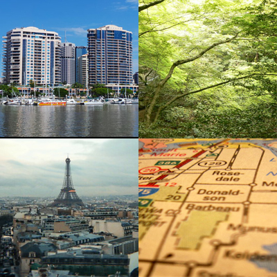

Once a year, go someplace you’ve never been before.
- Dalai Lama
Much of the world continues to suffer from a case of pandemic-induced cabin fever, but the steady pace of COVID-19 vaccinations means more people are contemplating travel. According to a recent survey conducted by the website Destination Analysts, 80% of respondents planned to take an overnight trip during 2021.
If you’re considering travel in the coming months, this site is for you. Use our tools and resources to locate travel destinations that are a perfect mix of experience, entertainment, and escapism.
Whether you are looking to stretch your vacation dollars, or wanting to mix volunteering with local sightseeing, our recommendations will help jumpstart your post-COVID travel plans.
Let the adventures begin!